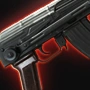
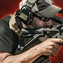
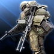
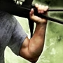
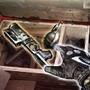
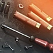
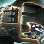

In Escape From Tarkov, your PMC has a bunch of skills which he develops while you play that help him survive in his raids. Skills have 3 states when leveling them in raid: The first state is when you haven't leveled the skill at all during that raid, in which you gain 129% of normal skill points until you get the first skill point. After the first skill point, you gain the normal skill points for 1 skill point. After these 2 skill points, you will reach a state where you get less than 100% of the skill points. The leveling speed is then calculated by using the formula: 0.6(Earned Points - 1)*100 where earned points are rounded down to the nearest digit. After not earning any skill points for 200 seconds, the modifier will reset for said skill. However it will just reset to 100% of skill points earnt, not 129%. Character Skills level up to level 51, with 51 being the Elite skill status. Those skills break into categories, including: Combat, Mental, Physical, Practical, and Special.
Combat: Combat skills purely help you when it comes to combat. Such skills usually include your mastery with weapons. Some prime examples are:
 Assault Rifles: This is your Assault Rifles handling skill. It improves overall handling, reduces recoil and reload time of Assault Rifles. It also increases weapon switching speed and ergonomics. At elite level, you gain steady aim for the first 3 seconds with any stamina condition. The same skill can be found on the same category for DMRs, Shotguns, Pistols, Sniper Rifles, Revolvers, Submachine Guns, Rocket Launchers, and other firearms. You can level such skills by Reloading Assault Rifles and landing hits on enemies with Assault Rifles or Assault Carbines (or any Rifle category, depending on the skill). Also, specific quests give you points towards leveling them.
 Recoil Control: This is your Recoil Control skill. As you may have realized, this skill helps you with controlling the recoil of your weapon. The higher the recoil control, the less the horizontal spread, making the recoil more predictable that way. You level this skill by shooting with any weapon. The amount of points you get depends on the base recoil of the gun you are firing. The higher its base recoil, the more points you get. Tip: firing ~30 rounds during a raid will give you enough points and will reach the skill to the diminishing returns part.
Troubleshooting: This is your Troubleshooting skill. Since your weapons have a chance of jamming in raid, this skill helps you with facilitating the rectification of such malfunctions. By leveling this skill you increase the speed in which you diagnose malfunctions (There are different types of malfunctions in the game, like Bolt jam, Failure to feed, and more), and, at Elite Level, You are able to identify the malfunction type without inspecting your weapon, and reduces the chance of malfunctions.
Physical: Physical skills include skills that have to do with your body. How fast you can run, how strong you are, your metabolism, and more. Some of these skills are:
 Endurance: Endurance influences the amount of stamina and the rate of exhaustion while running or jumping, as well as holding and restoring breath. You level this skill by walking/sprinting while not being overweight, or going to the gym. By leveling this skill, you increase your stamina, your holding breath time, and decrease your jump stamina drain and breath recovery time. At Elite level, you gain a stamina boost, increased hands stamina, and your breathing is independent of energy.
 Strength: Your strength represents your power. You level your strength by walking or sprinting while overweight, going to the gym, using melee weapons and using throwables. By leveling your strength, you increase your jump height, your carrying weight, our melee strike power, your movement and sprint speed, your throw distance, and aiming drains less stamina. At Elite Level, Equipped weapons do not add up to the weight of your character (Excluding weapons in your backpacks), and you can deal critical melee damage.
Vitality: Your vitality represents your strength against wounds. You level this skill whenever you take damage. By leveling this skill, your chances of bleeding or dying by losing a limb are lowered. At elite level, it increases health regeneration while in battle, and bleedings stop on their own.
Mental: Mental skills are connected to your operator's mind. It is crucial to keep your mental in check when in battle. Some of these skills include:
 Attention: Attention is useful for looting containers. You level it by looting containers. By leveling this skill, you are able to examine and loot things faster. At Elite level, it doubles your looting EXP, and gives you a 50% chance of instantly revealing all loot in a container.
Intellect: I believe this one is obvious, it shows your intellect. You level intellect by crafting items in your hideout, repairing armors and weapons with their respective repair kits, and examining items. By leveling this skill, you increase item examination speed, weapon repair quality, and you reduce repair cost. At elite level, you gain an exact ammo counter of any magazine, you are able to guess on a container's contents without searching it at all, and you do not need a manual for item examination.
Perception: Perception helps with hearing distance and loot detection radius. You level this skill by looting. A couple of tasks also give you boosts in your perception skill. When leveled, it increases hearing distance and loot detection radius, and, at Elite status, you get a loot proximity notification, telling you there's loot nearby.
Practical: Practical skills include skills that require you get your hands dirty. These skills can help both in combat, and out of combat. Some of these skills include:
Covert Movement: Covert Movement is a skill that helps with movements like walking slowly, crouching, and being prone. You level this skill by walking slowly. By leveling this skill, you reduce the sound of your footsteps on a variety of surfaces (Metal, Wood, Concrete), you increase the speed of covert movement, and you also reduce the noise weapons and equipment make. At elite level, Covert movement becomes equally quiet on all surfaces.
 Crafting: Crafting is your mastery in crafting stuff in your hideout. You level this skill by crafting items in your hideout. By leveling this skill, you reduce item craft times, and the time it takes for all cycling production excluding the Bitcoin Farm. At an elite state, you are able to craft 2 different items on the same station at the same time.
 Searching: Searching is the skill you level when searching loot containers and corpses. When leveling this skill, you increase your search speed, and, at Elite status, you are able to search two containers at once.
Special: Special skills have not been implemented yet, however these will change depending on your faction. If you are a USEC, such skills will allow you to specialize in AR systems, long range optics, and things related to them, while if you are a BEAR, it will allow you to specialize in big calibers, assault operations, and more.